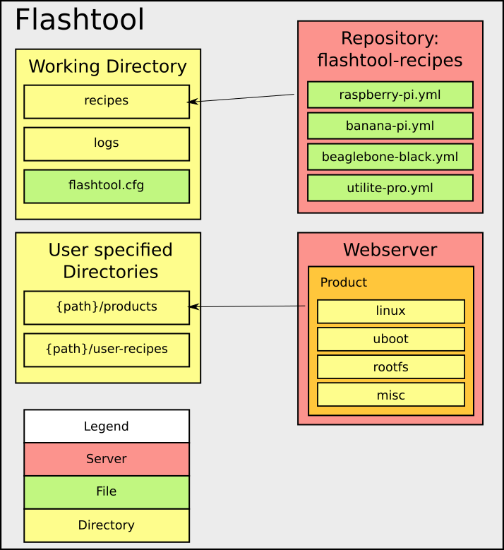

Flashtool Implementation
This describes the implementation of the Flashtool that has been worked out according to the design of the Flashtool.
Overview
The next figure shows the structure of the Flashtool.

Configuration File And Working Directory
The configuration file for the Flashtool is saved in a own working directory for the Flashtool. This working directory can be set by the user when the tool is initialized. When the user does not specify the working directory it will be created in the home directory with the folder name ".flashtool.
This working directory is used to save the configuration files for the platforms and logging files of the Flashtool.
Recipe File For Platforms
The configuration file for the platform act as recipe for the setup procedure. The user is able to define how to partition a MMC storage device of the platform and where the products should be loaded. The Flashtool supports the MMC storage device, because the platforms used in the HTWG context use SD-cards as storage media. How to implement a new recipe type is explained in the deployment section of the Flashtool.
Language
The language of the recipe file is YAML. A recipe file must contain at least one YAML document. Each YAML document specifies a recipe. So a recipe file contains one or more recipes. Each recipe must have a python counterpart, which ensures if all required settings are given, checks the values of the settings and implements the deployment procedure for the storage device.
---
type : ${recipe type}
recipe:
${settings for recipe}
This example shows the basic structure of a recipe. Multiple recipes in a recipe
file must be divided by ---.
Name Scheme
The name scheme of a recipe file is as follows:
{platform name}.yml}
or
{platform name}_{identifier}.yml
The platform name and the identifier must not contain underscores. The platform name must also exist on the buildserver configuration for the specific platform. With the identifier it is possible to set multiple recipe files for a platform.
Availability of predefined recipe files
The Flashtool retrieves its recipe files via a repository which is configured on github. This repository already contains recipe files for the rapsberry pi, beaglebone black, utilite pro and banana pi, which are used in the HTWG context. It is also possible to use an other repository with other recipe files.
The repository must be a git repository and the URL to it must be configured in the Flashtool configuration.
User defined recipe files
It is also possible for the user to add a directory for the Flashtool where the user can add own recipe files. This directory is configured in the Flashtool configuration file by the user.
Retrieving software products
The built software product must be retrieved from the builbot web server. The web server provides a JSON api to get all information about every built which was made. This JSON information must be parsed by the Flashtool to get all valid builds. The next list shows the paths which provide different information about the buildbot master and which data is useful for the Flashtool.
-
/jsonGet all supported platforms and which architecture the platform has. It also gets the name of the builder for a specific architecture.
useful values in json string ([i]: for each entry):
- builders[i]->basedir: builder name and architecture
- builders[i]->schedulers: branch filter and platform name
-
/json/builders/{builder name}/builds/-1Get the last build of the builder.
useful values in json string:
- number: build number
-
/json/builders/{builder name}/builds/{build id}Get information about a specific build. Check if build was successful and save the following values for each successful build.
useful values in json string:
- text: check for value build and successful
- properties->urls: path to the built files and product
- properties->upload_files: Created files of the build
With this information it is possible to create a download link for each software product. The path is created by the following patterns:
/{url}/{file name}
The retrieved information of the web server tells the Flashtool which product is available for which platform. The information for the architecture of a platform is also provided in the JSON strings. This information is not stored in the Flashtool and can only be retrieved from the buildserver.
Recognizing MMC devices
To recognize a plugged in MMC device the Flashtool uses the pyudev package. This package allows to listen to the udev events on the system and filter them by some keywords.
First of all the user will be asked to remove the MMC media first. After confirming this step, the python script listens for a udev event:
context = Context()
monitor_mmc = Monitor.from_netlink(context)
monitor_mmc.filter_by(subsystem='block', device_type='disk')
for action, device in monitor_mmc:
if action in ['add', 'change']:
self.__count(action, device)
break
The udev system will trigger various events when plugging in a MMC device. Every event returns an action and a device name. The important event actions are the add and change event. These events are counted for every device.
With this information, the Flashtool decides which of the recorded devices were plugged in by the user. There are 4 scenarios how the user could plug in a MMC card.
-
User inserts MMC device into a external MMC card reader with multiple MMC slots:
Python dictionary looks like: (device sdd is MMC card)
{'add': {}, 'change': {u'sdd': 2}} -
User inserts the external MMC card reader in the usb port and then inserts the MMC device into the card reader:
Python dictionary looks like: (device sdd is MMC card)
{'add': {u'sdb': 1, u'sdc': 1, u'sdd': 1, u'sde': 1, u'sdf': 1}, 'change': {u'sdb': 1, u'sdc': 1, u'sdd': 5, u'sde': 1, u'sdf': 1}} -
User inserts the external MMC card reader in the usb port and the MMC device was already plugged in the external MMC card reader:
Python dictionary looks like: (device sdd is MMC card)
{'add': {u'sdb': 1, u'sdc': 1, u'sdd': 1, u'sde': 1, u'sdf': 1}, 'change': {u'sdb': 1, u'sdc': 1, u'sde': 1, u'sdf': 1}}This scenario could also lead to a state, that the Flashtool would recognize multiple MMC devices, if there were plugged in multiple MMC devices in the external reader. If that happens the tool will ask the user to choose one of the recognized devices.
-
User inserts MMC device into an internal MMC card reader:
Python dictionary looks like: (device mmcblk0 is MMC card)
{'add': {u'mmcblk0': 1}, 'change': {}}
After recognizing the MMC device, the Flashtool will proceed with its setup routine.
Deployment Of Products To The MMC Device
For the deployment procedure several steps has to be done. The sections below will describe these steps:
Checking First MB of MMC device
Before partition the MMC device, the Flashtool generates one Megabyte of random data and copies this data on the first Megabyte of the MMC device. After that the Flashtool reads this Megabyte from the MMC device. A MD5 hash will be generated for the read data and the generated data and will be compared. When the hash strings are the same, the tool assumes that there is no corrupted sector in the storage where the MBR or GPT is saved.
Partition The Device
In the section evaluation a decision was made for the pyparted package for partitioning the MMC device. The Partition layout will be given by the specified recipe file. The usage of the MMC recipe is described in the usage section of the flashtool.
Format The Partitions
The Flashtool uses the mkfs tools of the system to format the partitions. These command will be executed with the subprocess package.
Load The Products On The MMC Device
The Flashtool retrieves all information about built products of the
buildbot server. The user can select which version of a product he wants to
load on the device. This can be done at the call of the Flashtool with the
options linux, uboot, misc, rootfs (see usage Chapter).
If the string from the user matches for multiple files the specific file must be
selected during the deployment procedure.
Example:
$ flashtool setup raspberry-pi
+-----------------------------+
| product: rootfs |
| reg_name: |
| file_types: rootfs, portage |
+-----------------------------+
Found one version for product rootfs with regex .*.*
-> Selected version: armv6j_hardfp_factory-systemd_20150306055251_c7ce255:
+-------------------+
| product: uboot |
| reg_name: |
| file_types: uboot |
+-------------------+
Found multiple versions for product uboot with regex .*.*
[0]: 2015.01-rc1_raspberry-pi_20150101144851_ef42c9b
[1]: 2015.01_raspberry-pi_20150302180956_7021c3c
[MANUAL-MODE] Please select a file: [0-1]:
After selecting the product versions, the MMC device will be partition and the partitions will be formated. Then the Flashtool will download the product files with the python package urllib.
+-------------------+
| LOAD FILES ON MMC |
+-------------------+
GET BUILD FILES ROOTFS, LINUX, UBOOT, MISC FOR PLATFORM RASPBERRY-PI
[rootfs]:
DOWNLOAD FILE:
URL: http://moe.in.htwg-konstanz.de:8010/rootfs/factory-systemd/armv6j_hardfp_factory-systemd_20150306055251_c7ce255_rootfs.tbz2
FILE: armv6j_hardfp_factory-systemd_20150306055251_c7ce255_rootfs.tbz2
0.5% of 83.7818 MBytes
Generating fstab
At the end of the Flashtool it generates a fstab file and copies it to the rootfs partition of the MMC device. The fstab will be generated with a jinja2 template. The values for the template are retrieved from the given recipe file and the information of pyudev.
Example:
Recipe file:
---
type: mmc
recipe:
partition_table: msdos
partitions:
- name: boot
size: 100mb
fs_type: fat32
mount_point: /boot
mount_opts:
flags: lba
- name: rootfs
size: max
fs_type: btrfs
mount_point: /
mount_opts:
flags:
...
jinja2 template:
# <fs> <mountpoint> <type> <opts> <dump/pass>
{% for obj in info %}
{{obj.uuid}} {{obj.mountpoint}} {{obj.type}} {{obj.options}} {{obj.dump}} {{obj.pas}}
{% endfor %}
result fstab:
# <fs> <mountpoint> <type> <opts> <dump/pass>
UUID=cb7afe2c-d2de-4127-ba87-e8734f144b5f /boot vfat defaults 0 0
UUID=dc47945f-0282-4994-827e-fdc468bbc432 / btrfs defaults 0 0
List of features
The table below shows a quick overview of the features of the Flashtool. A detailed description of the command can be found in the usage section of the Flashtool
| command | description |
|---|---|
| init / config | Configure needed options for the Flashtool. Must be done as first step (init) and can be changed any time (config) |
| platform_recipes | Get or update platform recipes from git repository |
| list_platforms | Shows which platforms have a recipe file and can be set up |
| list_builds | List all versions of software components on the platform, grouped by platform and product type |
| setup | runs a deployment procedure for the specified platform |
| check_mmc | Does a filesystem check on every partition on a mmc media |
Directory structure of the Flashtool
flashtool
├── configmanager # Handles the flashtool configuration file
│ └── __init__.py
│
├── server # Modules to connec to a Server
│ ├── buildserver.py # Buildbot server, parsing json data, download files
│ ├── cfgserver.py # Cloning and pulling from git server
│ └── __init__.py
│
├── setup # Setup related modules
│ ├── constants.py
│ ├── deploy # All packages for preparing hardware and loading software on device
│ │ ├── __init__.py
│ │ ├── load.py
│ │ ├── mmc.py
│ │ └── templateloader.py
│ ├── devlaout # Contains all modules for setting up a layout for a storage device
│ │ ├── __init__.py
│ │ └── blockdev # Functions for partition a blockdevice
│ ├── recipe # Python recipe representation, check keywords and values
│ │ ├── __init__.py
│ │ └── mmc.py
│ ├── setupfactory # Loads the right modules statet in the recipe file
│ │ └── __init__.py
│ ├── udev # All udev related modules
│ │ ├── __init__.py
│ │ └── mmc.py # Udev recognition of MMC devices
│ └── __init__.py
│
├── templates # Templates
│ └── fstab # fstab template
│
├── utility # Helper functions which are commonly used
│ └── __init__.py
│
├── tests # Directory for unit tests
│ ├── test_recipe.py
│ ├── test_recipe_load.py
│ ├── test_recipe_mmc.py
│ └── mock_path # path mocks
│
└── __init__.py # Entry point of the Flashtool